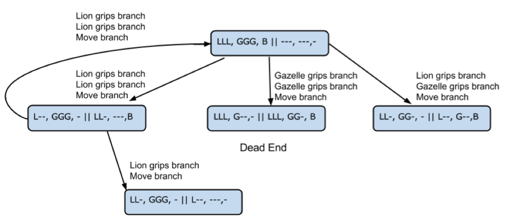

Artificial Intelligence
1 SRD Work
Learn It
- This is an introduction to Artificial Intelligence (AI) ‘state-space search.’
- There is probably lots more than an hour of work here – stop at an hour and update your notes/thoughts to www.bourneToLearn.com AI – SRD work badge.
Research It
- Try to solve these three classic ‘crossing the river’ puzzles.
- Now work out a solution for the following puzzle:
- Three lions and three gazelles meet on one side of a river. All of them need to cross to the other side of the river.
- The current is too strong for any of them to swim across alone. None of the animals can cross without gripping a tree branch to help them float.
- A single branch lies on their side of the river. Only one or two animals at the most can use the branch at one time to get across, or they will sink.
- At least one animal must grip the branch to get it across (it can’t simply be tossed back). If more lions than gazelles are on one side of the river, the lions will eat the gazelles.
- The animals holding onto the branch count toward those who will attack or be eaten when the branch is on either riverbank.
- Record your solution into your notes.
Learn It
- A state space is, essentially, a diagram of how a problem can be described as the paths from a start-state to a goal state, with possibly dead-ends and loops. If you play video games, you may have a sense for this.
- A state is a description, a notation or representation, of what you need to keep track of in the puzzles e.g. where the lions and gazelles are, and where the branch is.
- A state change rules describe how one state goes to another. For example “a lion grips the branch”, “a gazelle lets go of the branch”, “the branch is on the starting bank of the river”.
- Depth first search Given a state, pick a rule, apply it to create a new state, then, apply a rule to that state. If it is a dead end, back up the path and explore another rule.
- Breadth first search Given a state, apply all possible rules for that state to create all of the possible next states. Mark dead-ends. Expand all possible states that are not dead-ends.
Try It
- Fill out the state diagram for lions and gazelles and add it to your notes.
- Make sure you identify ‘dead states’ where the gazelles get eaten.
- Also try to label, using any notation that works for you, the rules that transition between states.
- The diagram shows the start of a state-space for the “Lions and Gazelles” problem with a possible way to describe states.
- Your job is to (1) come up with a notation that is easier for you to write, but doesn’t lose any information, (2) add missing rules,
- (3) using your clearer notation, create a ‘reasonably’ complete state-space, including dead ends and reverse moves.
- Reverse moves occur when you go back to a previous state, undoing your forward progress. Identify your start state and goal state(s).

- State notation: LLL, GGG, B|| —,—,- This means there are 3 Lions and 3 Gazelles on the left bank with the tree Branch, and nothing on the right bank that is important to the puzzle.
- Some rules: Lion grips branch, Gazelle lets go of branch, move branch across river.
- Hints:
- 1) Notice that two or three rules are applied before drawing the next state. You could expand out the intermediate states, but it gets tedious. A good state space diagram captures just the essential information with creating clutter.
- 2) A reversing rule is shown. These may move you back more than one state!
- 3) Remember that your job is to find any, and perhaps all, of the possible solutions.
Depth vs. Breadth Searches
Answer the follow questions into your notes:
- As you created a state-space diagram, did you use depth- or breadth-first search?
- One strategy is guaranteed to find the best solution. Which one is it?
- When you solved the puzzle for your skit, did you use breadth- or depth-first search, or another combination?
Further reading and watching
- State Space Search https://en.wikipedia.org/wiki/State_space_search
- https://www.youtube.com/watch?v=7sQakNtkQtE
- http://www.cs.rmit.edu.au/AI-Search/Courseware/Slides1/03Example/03bWaterJugs/
This lesson was based on: AI Search: Lions and Gazelles Developed by IEEE as part of TryEngineering www.tryengineering.org